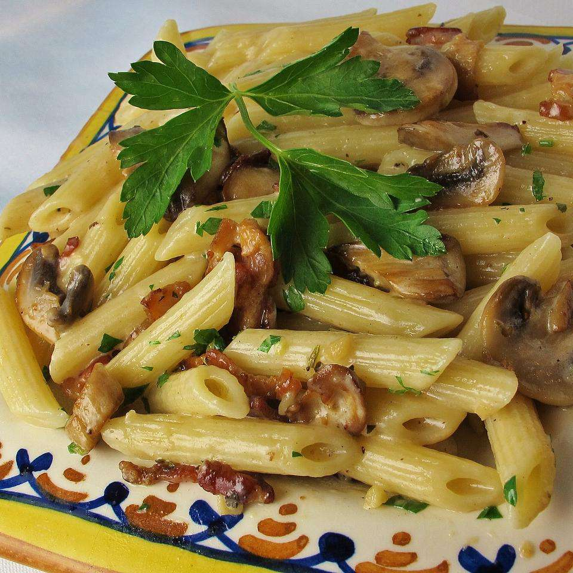

The best low cost pasta you will ever taste!
Penne Pasta with Pancetta

An Italian classic
A simple but filling plate of traditional
italian pasta that will scrath that itch for
italian food if you are low on money
Fun Fact this pasta name is derived from the
Italian word "penna," which means "quill" or "feather," and
the shape of the pasta resembles the tip of a quill or a cut feather,therebefore the name "peene".
ingredients
- 1 (12 ounce) package penne pasta
- 1 (3 ounce) package pancetta bacon, diced
- 2 tablespoons unsalted butter
- 1 (10 ounce) package sliced mushrooms
- 1 tablespoon minced garlic
- ½ cup heavy cream
- ¼ teaspoon Italian seasoning
- ¼ cup grated Parmesan cheese, or to taste
Here are the steps on how to make a delicious traditional italian plate
- Fill a large pot with lightly salted water and bring to a boil. Stir in penne and return to a boil. Cook penne uncovered, stirring occasionally, until tender yet firm to the bite, 8 to 10 minutes. Drain and set aside.
- Meanwhile, cook pancetta in a large skillet over medium heat until browned but not crispy, about 5 minutes. Drain on a paper towel-lined plate and set aside. Discard pancetta grease.
- Melt butter in same skillet over medium-high heat; stir in mushrooms. Cook and stir until mushrooms softened and released their liquid. Add garlic; cook 2 minutes. Reduce heat to medium-low; stir in cream and Italian seasoning. Simmer until sauce has slightly thickened.
- Off heat, add penne to sauce; toss to coat. Sprinkle with Parmesan cheese; serve.